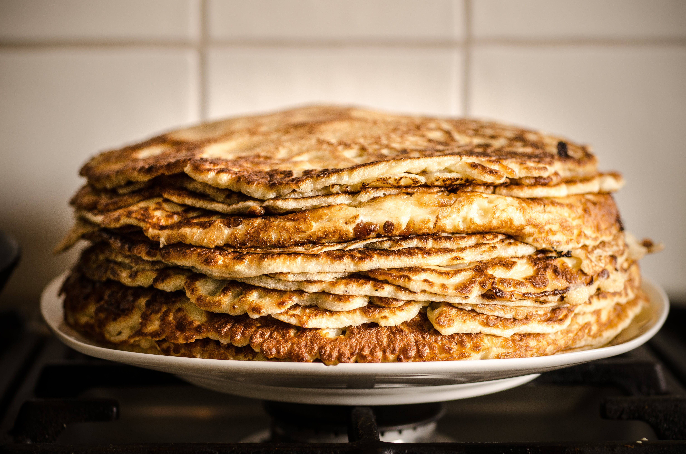

Thin Pancakes

Ingredients
- 700ml milk
- 300g flour
- 2 eggs
- 2 tbsp. sugar
- A pinch of salt
- 50g sunflower oil
Instructions
Time to prepare: 30 minutes
- Step 1: Beat or whisk the eggs with sugar and salt in a deep bowl.
- Step 2: Pour in milk and whisk again until you get a homogenous mixture.
- Step 3: Little by little, add in the flour and keep whisking.
- Step 4: Pour the sunflower oil and mix thoroughly.
- Step 5: Bake each pancake on a heated pan for 1-2 minutes on both sides.
Enjoy your Pancakes.
Note: You can also eat pancakes for lunch or dinner if you wish to.